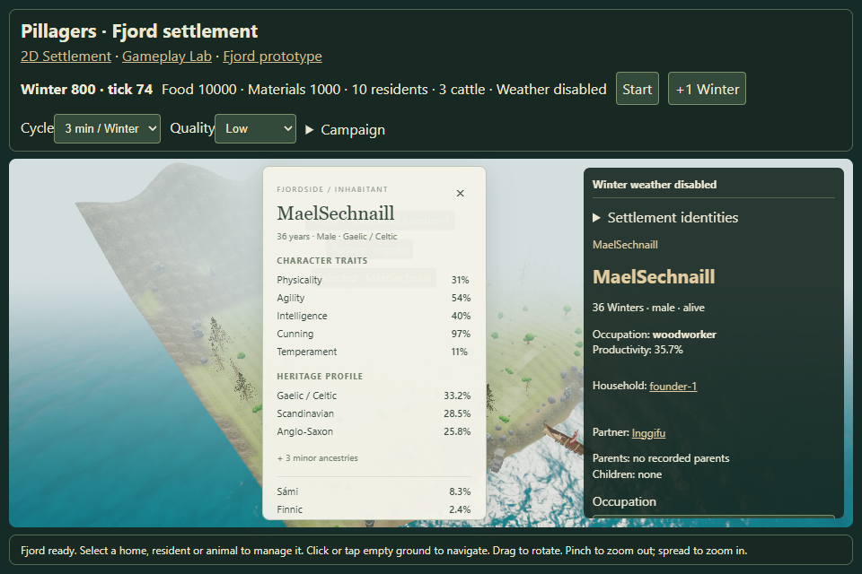
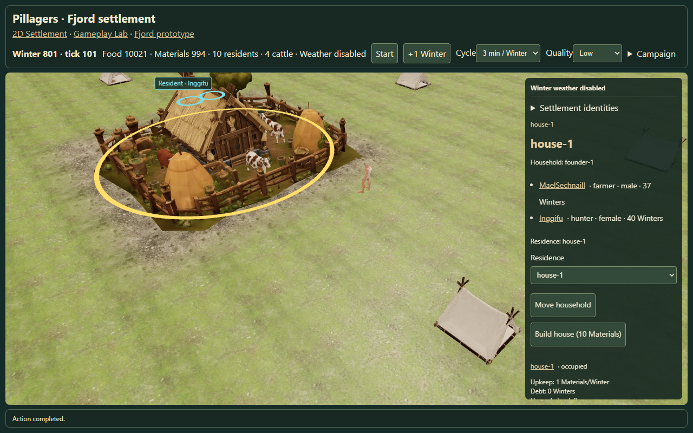
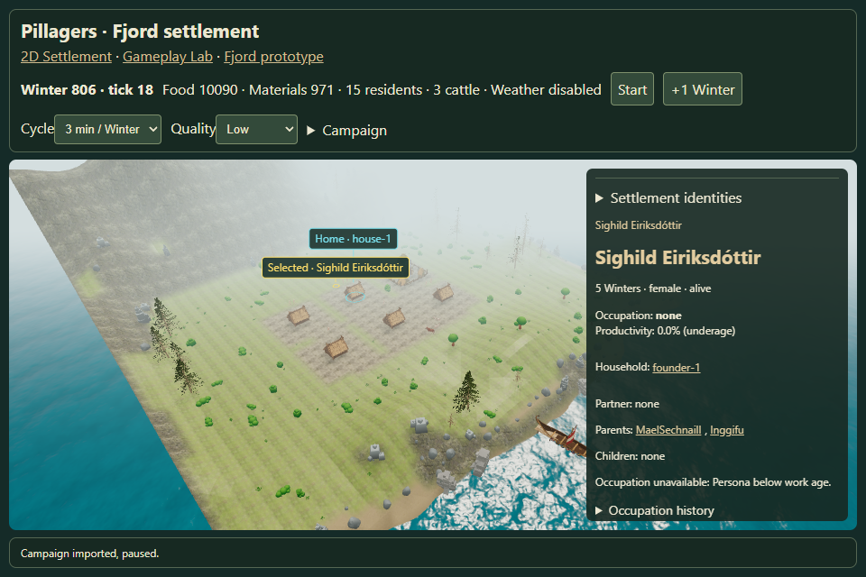

Living Fjord v0.6A
DNA body variation, restored heritage cards, safe resident and livestock movement.
QA report · Browser observations · Capacity observations

Shared Fjordside profile content follows the canonical resident. Stored cultural names are preserved.
Capacity +1: cattle-1 through cattle-4 inside; cattle-5 outside. Assignment and shelter remain canonical. Inside animals have been observed moving before capture.

At capacity after the real Slaughter action: four animals remain inside.

Fifteen canonical residents, thirteen outdoors. Indoor children and caregivers remain in management and population totals.
Low-quality headless rendering is used for functional QA. These images are not a native GPU performance benchmark.